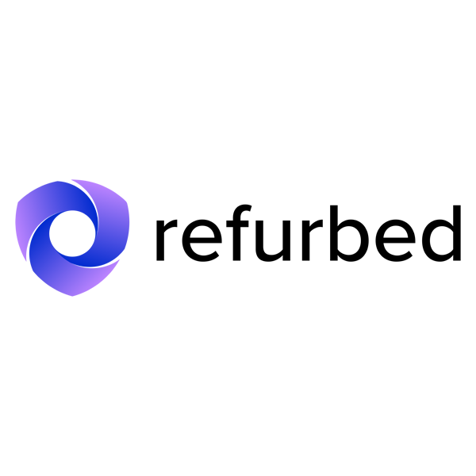

L'acquisto di prodotti ricondizionati presenta numerosi vantaggi sia per i consumatori che per l'ambiente. Innanzitutto, comporta notevoli risparmi economici, poiché i prodotti ricondizionati sono più accessibili rispetto a quelli nuovi. Questo permette ai consumatori di ottenere dispositivi tecnologici, elettrodomestici ed elettronica a prezzi più convenienti, senza compromettere la qualità grazie ai processi di ispezione e rigenerazione cui sono sottoposti. Inoltre, l'acquisto di prodotti ricondizionati contribuisce a ridurre l'impatto ambientale, evitando la produzione di nuovi oggetti e il conseguente consumo di risorse naturali ed energia.
Questo processo estende la durata utile dei prodotti e riduce la quantità di rifiuti prodotti, promuovendo la sostenibilità ambientale e la riduzione delle emissioni di carbonio. In sintesi, l'acquisto di prodotti ricondizionati offre vantaggi economici, qualità assicurata e riduzione dell'impatto ambientale, rappresentando una scelta sostenibile che favorisce il risparmio economico e contribuisce alla lotta contro i cambiamenti climatici.
Ecco dove poter acquistare prodotti ricondizionati:
Refurbed è un'azienda che ha sede in Austria che vende prodotti ricondizionati, dai cellullari, agli elettromestidici e tanto altro.
.png)
l'azienda nasce nel 2016, grazie a Peter Windischhofer, a Vienna. Il fondatore ha acquistato un iPhone su un sito web per prodotti usati; dopo solo poche settimane però il telefono si è rotto e, non avendo garanzia, ha dovuto riacquistare un nuovo smartphone di tasca sua. Così nasce l'idea di refurbed: una piattaforma per prodotti ricondizionati qualitativamente affidabili, con standard elevati e unitari in quanto a qualità, sicurezza e garanzia. In tal modo i consumatori possono acquistare dispositivi usati senza correre rischi in prima persona.